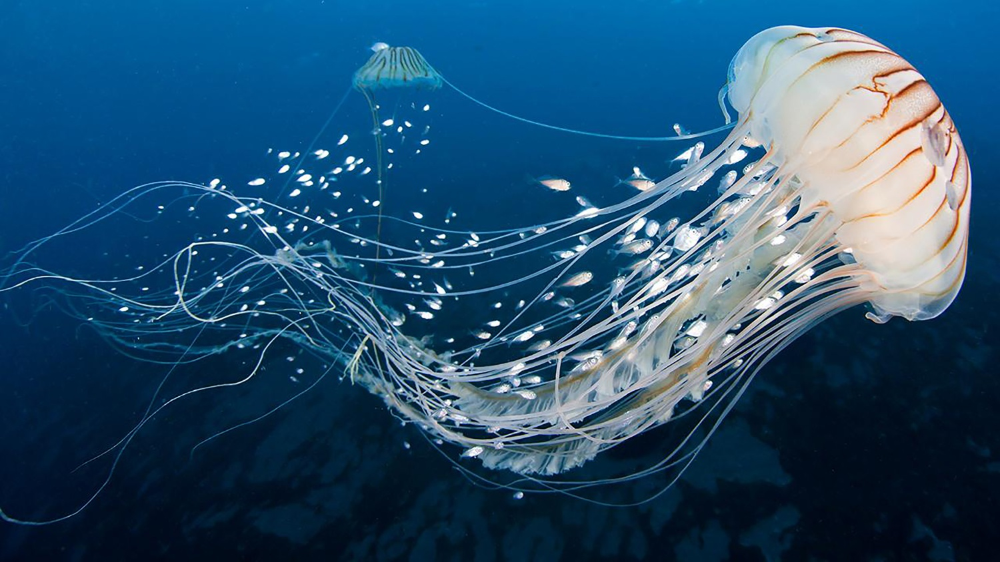

Animais Marinhos
Água- Viva
As águas-vivas, ou medusas, são animais marinhos pertencentes ao filo Cnidaria, classe Scyphozoa. O corpo tem a forma de um sino margeado por tentáculos e apresenta uma organização simples, havendo uma cavidade gastrovascular central com uma única abertura que atua como boca e ânus.
Tartaruga Marinha
Os Testudines, quelónios ou tartarugas são uma ordem de répteis pertencentes ao clado Testudinata. Correspondem a 14 famílias que possuem em torno de 356 espécies, que ocorrem em regiões tropicais e temperadas, algumas delas ameaçadas de extinção.
Cavalo- Marinho

Hippocampus é um gênero de peixes ósseos, pertencente à família Syngnathidae, de águas marinhas temperadas e tropicais que engloba as espécies conhecidas pelo nome comum de cavalo-marinho.